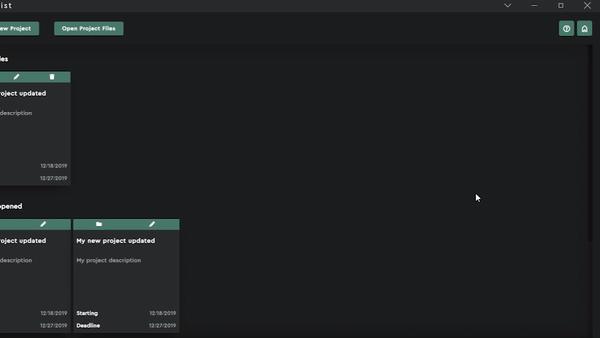
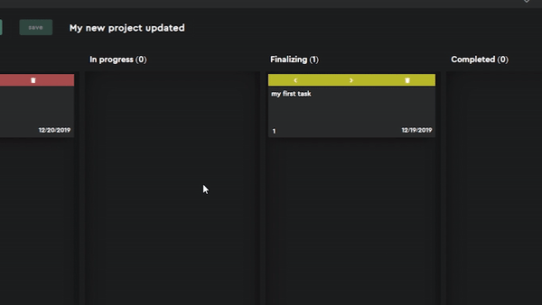
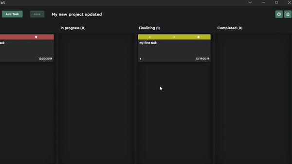

{{ project.title }}
{{ project.description }}
Opened files
{{ project.title }}
{{ project.description }}
Starting {{ project.fromDate }}
Deadline {{ project.deadline }}
Recently opened
{{ project.title }}
{{ project.description }}
Starting {{ project.fromDate }}
Deadline {{ project.deadline }}
Sample projects
{{ project.title }}
{{ project.description }}
Starting {{ project.fromDate }}
Deadline {{ project.deadline }}
To Do ({{ todoTotal }})
{{ task.description }}
{{ humanReadableIndex(index) }}
{{ task.deadline }}
In progress ({{ beingWorkedOnTotal }})
{{ task.description }}
{{ humanReadableIndex(index) }}
{{ task.deadline }}
Finalizing ({{ doubleCheckingTotal }})
{{ task.description }}
{{ humanReadableIndex(index) }}
{{ task.deadline }}
Completed ({{ finishedTotal }})
{{ task.description }}
{{ humanReadableIndex(index) }}
{{ task.deadline }}
To Do ({{ todoTotal }})
{{ task.description }}
{{ humanReadableIndex(index) }}
{{ task.deadline }}
In progress ({{ beingWorkedOnTotal }})
{{ task.description }}
{{ humanReadableIndex(index) }}
{{ task.deadline }}
Finalizing ({{ doubleCheckingTotal }})
{{ task.description }}
{{ humanReadableIndex(index) }}
{{ task.deadline }}
Completed ({{ finishedTotal }})
{{ task.description }}
{{ humanReadableIndex(index) }}
{{ task.deadline }}
Are you sure you would like to remove this project?
{{ opTemp.activeProjectDeleteTitle }}
{{ opTemp.projectDetails.errMessage }}
Title
Description
Starting Date
Deadline
{{ opTemp.projectUpdateDetails.errMessage }}
Title
Description
Starting Date
Deadline
{{ opTemp.taskUpdateDetails.errMessage }}
Description
Deadline (optional)
{{ opTemp.taskDetails.errMessage }}
Description
Deadline (optional)
Are you sure you would like to delete this task?
Description
{{ opTemp.activeTaskDeleteDescription }}
Deadline
{{ opTemp.activeTaskDeleteDeadline }}
You are about to leave an unsaved workflow.
Are you sure you would like to leave before saving?
You are about to leave an unsaved workflow.
Are you sure you would like to leave before saving?
There seems to be an issue saving your project.
{{ opTemp.activeProjectDownloadError }}
Description
{{ opTemp.activeViewDescription }}
Deadline
{{ opTemp.activeViewDeadline }}
If you are ever lost, you can find your way by clicking the icon on the top right.
Creating Project files.
Click the 'create new project' button on the top menu. This will open a popup to collect project details. Provide a project title, project description and optionally a starting date and deadline then click 'create'. This will open the file save dialog. It is recommended you save the file with the default title as the name. This will save the project to a file. The extension of the file should remain .kdl or the file will not work.
Opening Project Files.

Click the 'open project files' button. This will open an 'open file dialog' in Documents\KanDoList. This is the default save directory of the application. Select one or more files and click open. These files will be loaded into the project catalogue where you can view, update and open them.
Updating A Project's Details.

Click on the pencil icon on top of the project card. This will open an update popup.
Removing A Project.

Click on the trash icon first from the right on the top of the project card to remove the project. This project will be be deleted however , just removed fom the catalogue.
Sample Projects.

Sample projects can be used to play around and try out the features of the application.
Opening A Project's Task Tracker.

The project task tracker is a simple tool to help you break down your project into multiple small tasks and attempt them one at a time. This tool has four basic stages 'To Do', 'In progress', 'Finalizing' and 'Completed'. A task is added to the 'To do' stage, all tasks start off here and can be moved on to the 'In progress' on stage when the user is working on the task. The task can the be moved to the 'Finalizing' stage for final touches and then to the 'Completed' stage when it is finished. Tasks can be moved froward or backwards freely and they can also be moved up and down the list of any stage depending on priority of the task.
Creating Tasks.

Tasks can be added to the task tracker by clicking the 'Add Task' button on the top menu. This will open a popup to take a task description and an optional deadline.
Viewing And Updating Tasks.

Tasks can be updated by clicking on the task's body. This will open a popup with the option to update the task. Once clicked details of the task can be updated in a popup with current task details.
Moving Tasks.

Tasks can be moved across the task tracker using the directional symbols on top of each task. moves a task forward a stage, moves a task backward a stage, moves a task down the list within the same stage and moves a task up the list within the same stage.
Deleting Tasks.

A task can be deleted using the icon on top of the task the confirming the action.
Saving.
The positions of tasks in the task tracker can be saved by clicking the 'save' button on the top menu.
Getting Help.
If you are lost, you can find your way by clicking the icon on the right of the top menu.
About The Application
You can find out about the application by clicking the icon on the top right.
KanDoList.
KanDoList is a simple, offline project task tracker based on the kanban model. It is developed by Shinobi Applications.